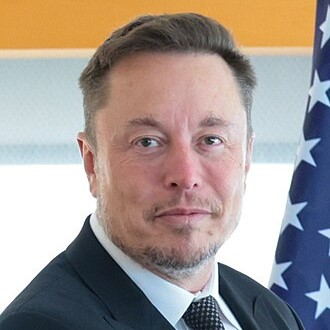
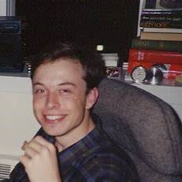
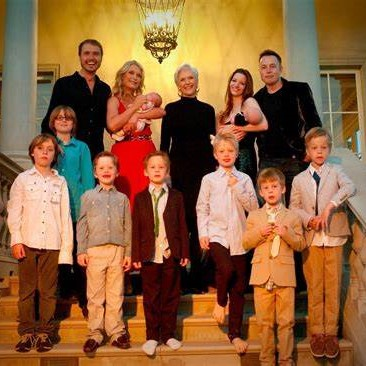

persistence
Your way to greatnnes
This website shows you how to become great and successfull
introduction
Elon Reeve Musk FRS (born June 28, 1971) is a businessman and investor known for his key roles in the space company SpaceX and the automotive company Tesla, Inc. Other involvements include ownership of X Corp., the company that operates the social media platform X (formerly known as Twitter), and his role in the founding of The Boring Company, xAI, Neuralink, and OpenAI. He is one of the wealthiest individuals in the world; as of August 2024 Forbes estimates his net worth to be US$241 billion.Musk has expressed views that have made him a polarizing figure. He has been criticized for making unscientific and misleading statements, including COVID-19 misinformation, promoting right-wing conspiracy theories, and "endorsing an antisemitic theory"; for the latter of which he later apologized. His ownership of Twitter has been similarly controversial, being marked by layoffs of large numbers of employees, an increase in hate speech, misinformation and disinformation posts on the website, and changes to Twitter Blue verification.

Early life
Elon Reeve Musk was born on June 28, 1971, in Pretoria, South Africa's administrative capital. He is of British and Pennsylvania Dutch ancestry. His mother, Maye is a model and dietitian born in Saskatchewan, Canada, and raised in South Africa. His father, Errol Musk, is a South African electromechanical engineer, pilot, sailor, consultant, emerald dealer, and property developer, who partly owned a rental lodge at the Timbavati Private Nature Reserve.Elon has a younger brother, Kimbal, and a younger sister, Tosca Elon has four paternal half-siblings. The family was wealthy during Elon's youth. Despite both Musk and Errol previously stating that Errol was a part owner of a Zambian emerald mine .Elon's maternal grandfather, Joshua N. Haldeman, was an American-born Canadian who took his family on record-breaking journeys to Africa and Australia in a single-engine Bellanca airplane; Haldeman died when Elon was still a toddler.Elon has recounted trips to a wilderness school ("veldskool") that he described as a "paramilitary Lord of the Flies" where "bullying was a virtue" and children were encouraged to fight over rations After his parents divorced in 1980, Elon chose to live primarily with his father. Elon later regretted his decision and became estranged from his father.

Education
Musk attended Waterkloof House Preparatory School, Bryanston High School, and then Pretoria Boys High School, where he graduated. Musk was a good but not exceptional student, earning a 61 in Afrikaans and a B on his senior math certification. Musk applied for a Canadian passport through his Canadian-born mother,[38][39] knowing that it would be easier to immigrate to the United States this way. While waiting for his application to be processed, he attended the University of Pretoria for five months.
Musk arrived in Canada in June 1989, In 1990, he entered Queen's University in Kingston, Ontario.Two years later, he transferred to the University of Pennsylvania, an Ivy League university in Philadelphia, where he earned two degrees: a Bachelor of Arts in physics, and a Bachelor of Science in economics from the university's Wharton School. Although Musk has said that he earned the degrees in 1995, the University of Pennsylvania did not award them until 1997. He reportedly hosted large, ticketed house parties to help pay for tuition, and wrote a business plan for an electronic book-scanning service similar to Google Books. In 1994, Musk held two internships in Silicon Valley: one at energy storage startup Pinnacle Research Institute, which investigated electrolytic ultracapacitors for energy storage, and another at Palo Alto–based startup Rocket Science Games In 1995, he was accepted to a graduate program in materials science at Stanford University, but did not enroll. Musk decided to join the Internet boom, applying for a job at Netscape, to which he reportedly never received a response.

Personal life
Musk has at least 12 children, one of whom is deceased. He met his first wife, Canadian author Justine Wilson, while attending Queen's University in Ontario, Canada; they married in 2000. In 2002, their first child died of sudden infant death syndrome at the age of 10 weeks. After his death, the couple used in vitro fertilization (IVF) to continue their family; they had twins in 2004 followed by triplets in 2006.The couple divorced in 2008 and shared custody of their children.In 2008, Musk began dating English actress Talulah Riley. They married two years later at Dornoch Cathedral in Scotland. In 2012, the couple divorced, before remarrying the following year. After briefly filing for divorce in 2014, Musk finalized a second divorce from Riley in 2016. Musk then dated Amber Heard for several months in 2017; he had reportedly been pursuing her since 2012.In 2018, Musk and Canadian musician Grimes said that they were dating. Grimes gave birth to their son in May 2020. Musk and Grimes originally gave the baby the name "X Æ A-12", which would have violated California regulations as it contained characters that are not in the modern English alphabet, which they then changed to "“X Æ A-Xii”.They have received criticism for choosing such an impractical and difficult to pronounce name. In December 2021, Grimes and Musk had a second child, a daughter born via surrogacy. Despite the pregnancy, Musk confirmed reports that the couple were "semi-separated" in September 2021; in an interview with Time in December 2021, he said he was single In March 2022, Grimes said of her relationship with Musk: "I would probably refer to him as my boyfriend, but we're very fluid. Later that month, Grimes tweeted that she and Musk had broken up again. In September 2023 it was reported that the pair had a third child, a son. In October 2023, Grimes sued Musk over parental rights and custody of their eldest son.

Career
1. He read the entire Encyclopaedia Britannica at nine years old 2. He taught himself to programme in three days 3. He landed his first internship with a cold-call 4. He ran a speakeasy to pay rent 5. He completed a double major 7. He cofounded PayPal 8. He founded SpaceX9. He created the Musk Foundatio 10. He became the CEO of Tesla 11. He revolutionised the electric car industry 12. He landed a billion-dollar contract with NASA 13. He debuted Tesla’s Model S 14. He launched the Falcon 9 Rocket 15. He joined the Giving Pledge 16. He sent a reusable rocket to space 17. He set the Hyperloop in motion 18. He created OpenAI 19. He acquired SolarCity 20. He founded the Boring Company21. He debuted the Powerwall22. He cofounded Neuralink23. He instituted the Big Falcon Rocket24. He was named one of the World’s Most Powerful People 25. He launched Gigafactory 3 in Shanghai26. He was awarded the Axel Springer Award27. His Crew Dragon spacecraft transported astronauts to the ISS28. He was Time magazine’s “Person of the Year”29. He provided internet to Ukraine during Russia’s invasion30. He was named the world’s richest person